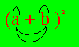

metodo per ricordare la regola del quadrato
Osserva la seguente figura e dimmi cosa ti sembra

Sembra una faccia che sorride: e' il nostro binomio al quadrato con disegnate 2 sopracciglia ed una bocca
il primo sopracciglio significa il primo monomio per se' stesso
a·a
Il secondo sopracciglio significa il secondo monomio per se' stesso
b·b
La bocca formata da 2 linee significa due volte il primo per il secondo
2·a·b
semplice, no?